Course · RCC ClusterDocs
Eighteen-class RCC learning path
The classes are sequential for new users, but experienced users can take the readiness gates and skip material they already know.
Availability note: RCC Admin, RCC workers/Slurm, managed Nextflow-to-Slurm support, and project Samba shares are ready now. Project vhosts, Ardia integration, and RCC-to-Coscine transfer are not yet released. The Class 8 (project vhosts), Class 17 (RCC-to-Coscine), and the Ardia parts of Class 16 are preparation for those future services.
Prefer to learn by video?
Start with one of the complete video lessons below. Each class page opens with the player; the written material remains underneath for commands, exercises, and detailed reference.
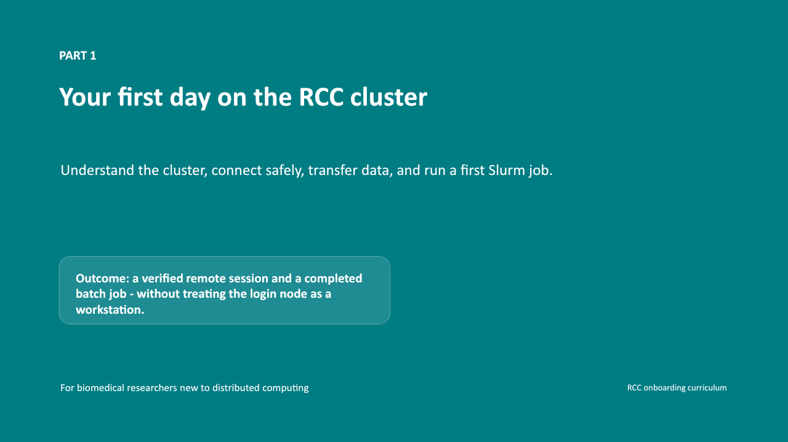
Class 1 · Safe access8 min video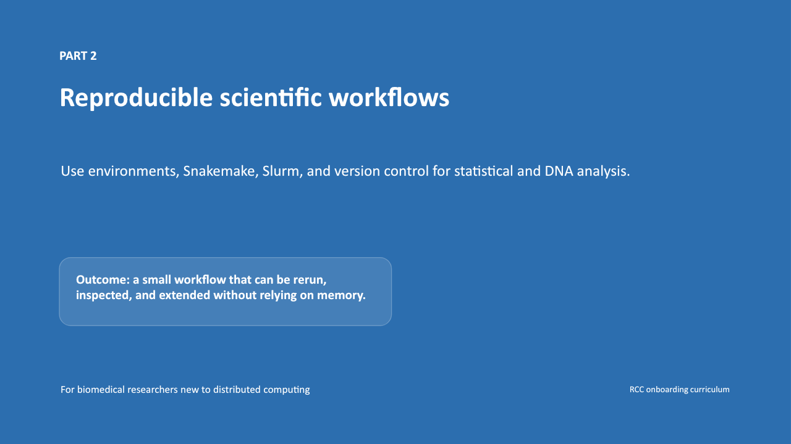
Class 2 · Workflows9 min video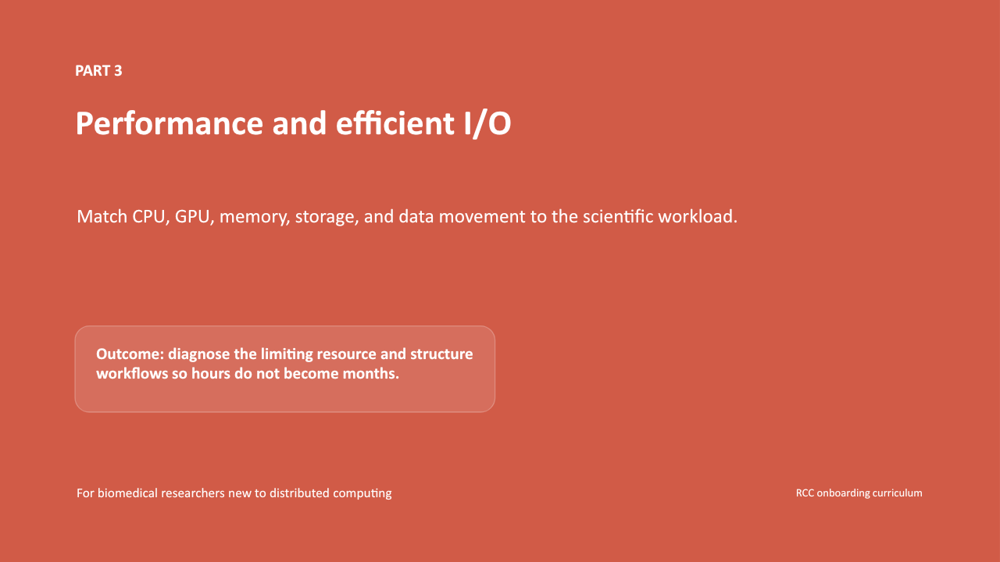
Class 3 · Performance11 min video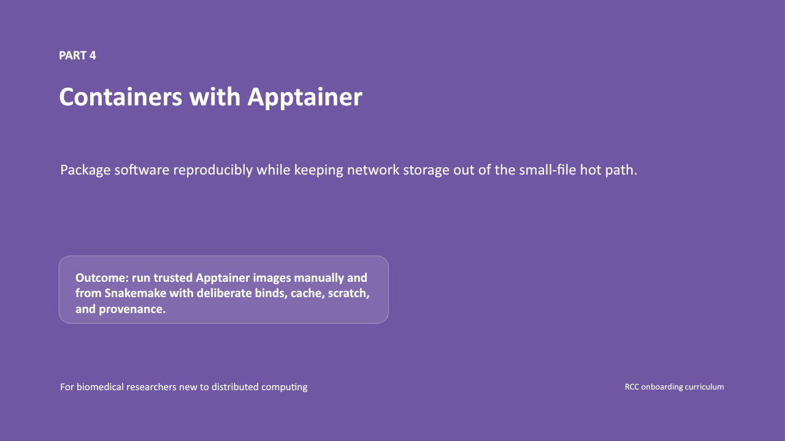
Class 4 · Containers10 min video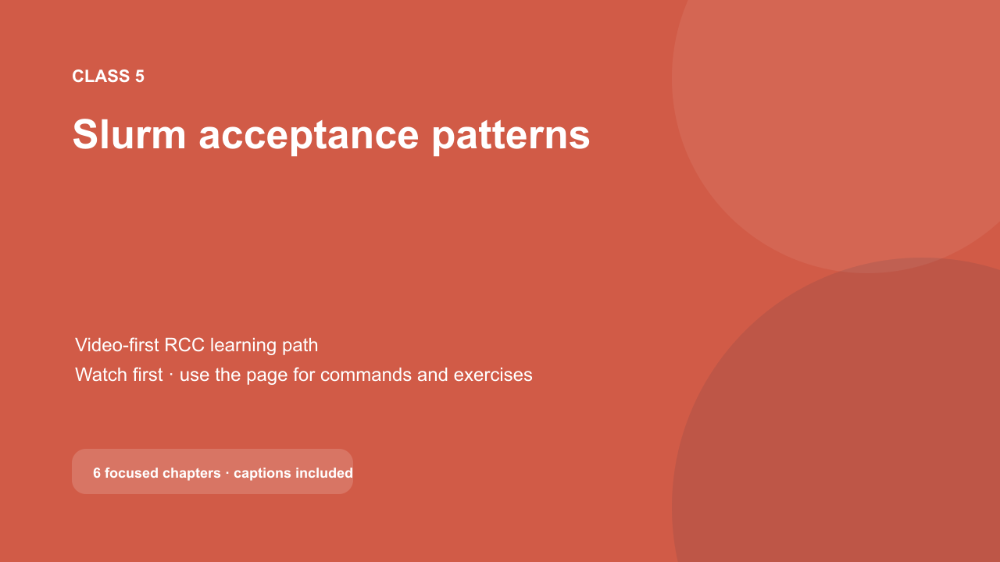
Class 5 · Slurm3 min video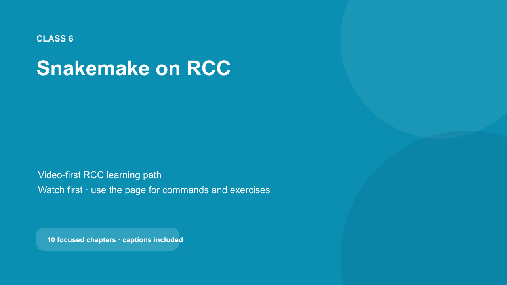
Class 6 · Snakemake6 min video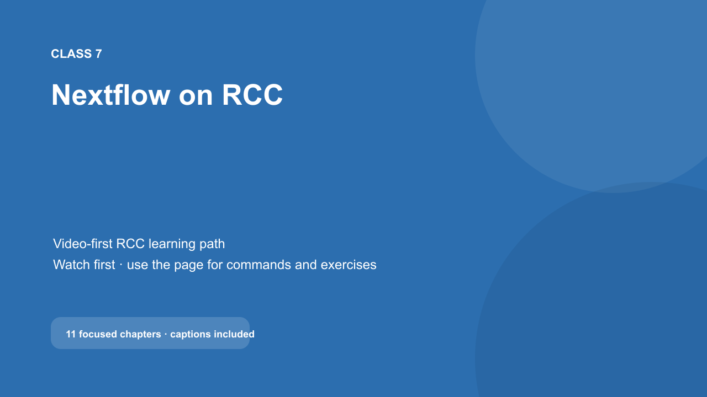
Class 7 · Nextflow7 min video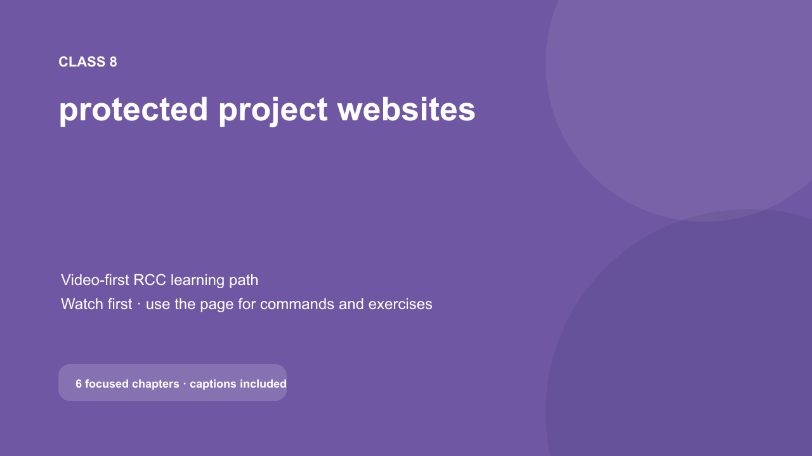
Class 8 · Websites3 min video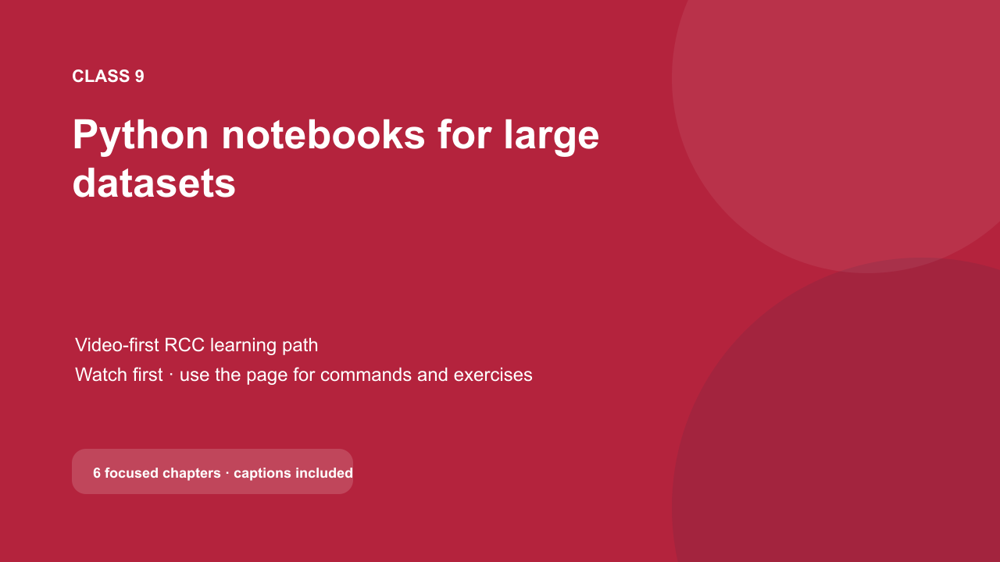
Class 9 · Python4 min video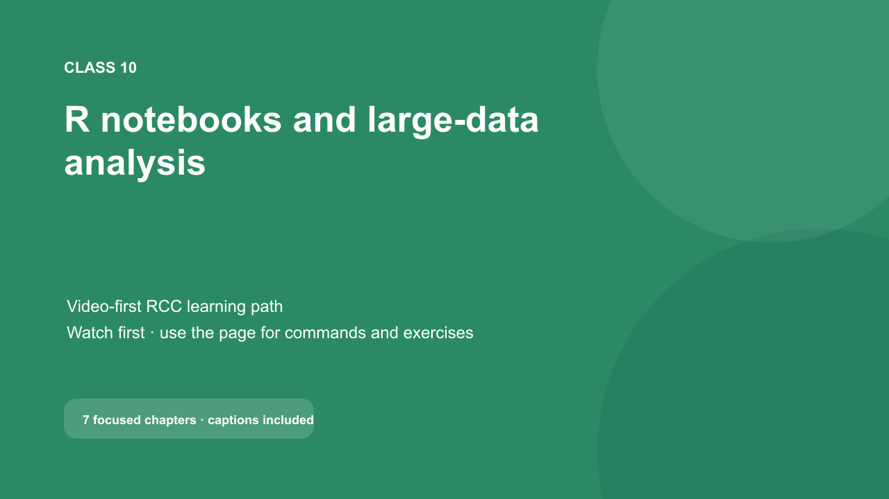
Class 10 · R2 min video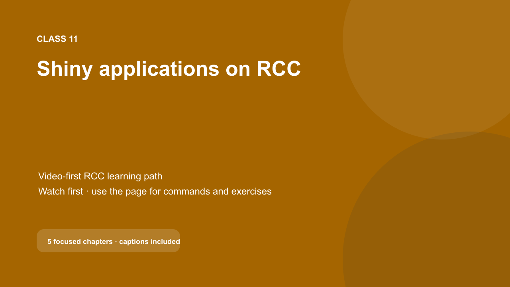
Class 11 · Shiny2 min video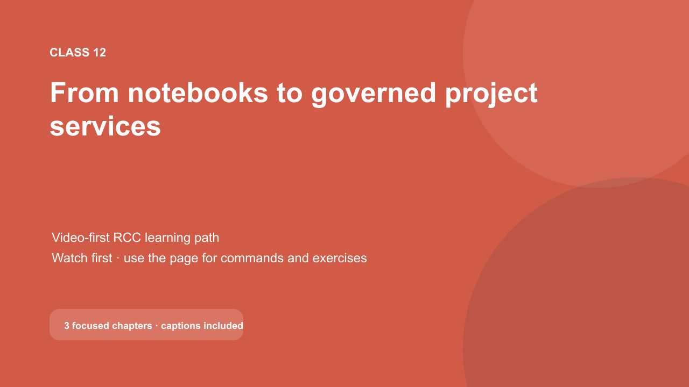
Class 12 · Services2 min video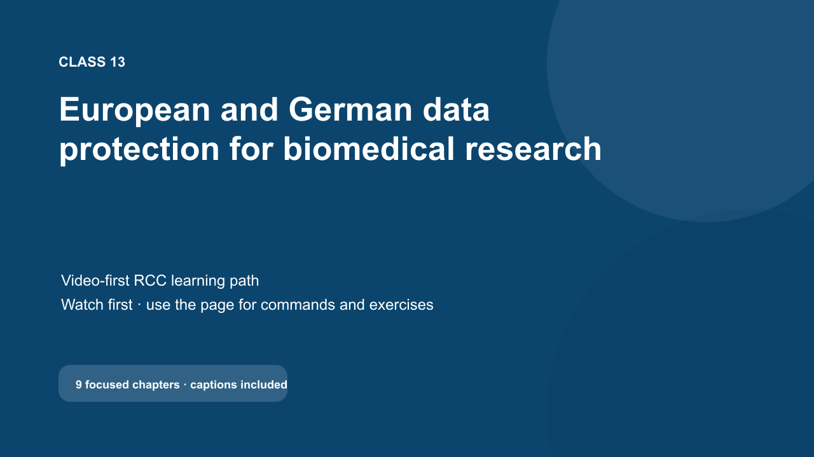
Class 13 · Data protection7 min video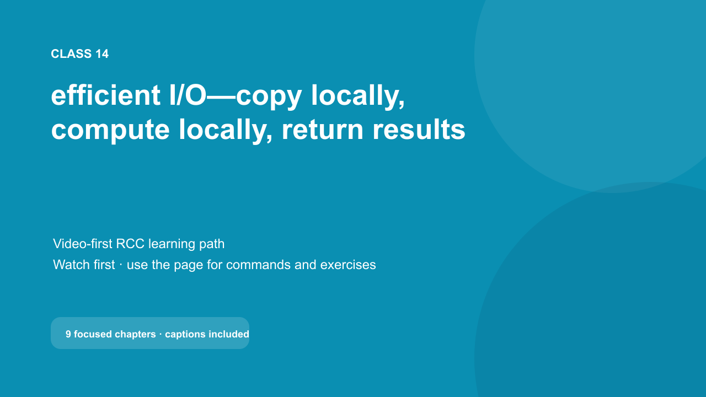
Class 14 · Efficient I/O6 min video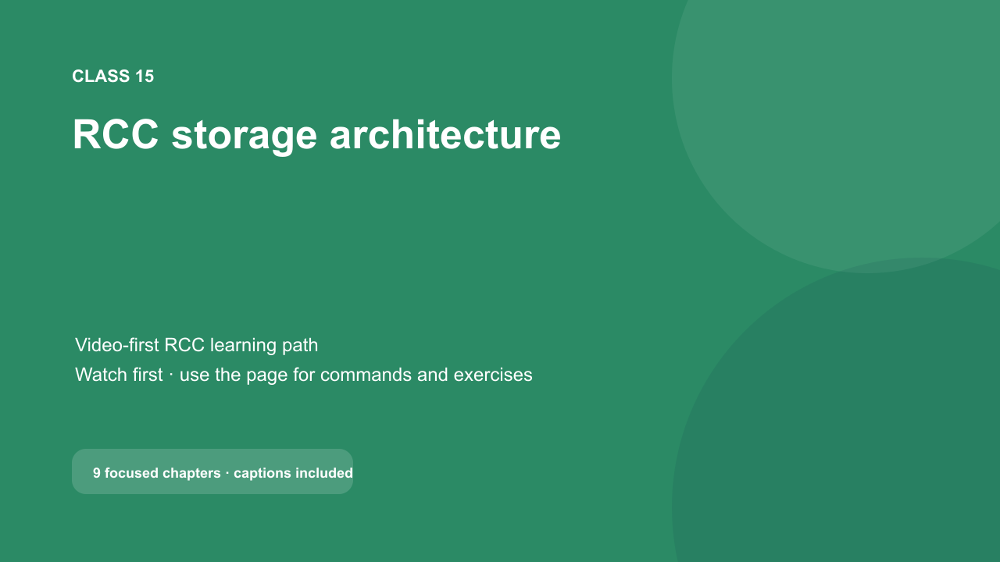
Class 15 · Storage5 min video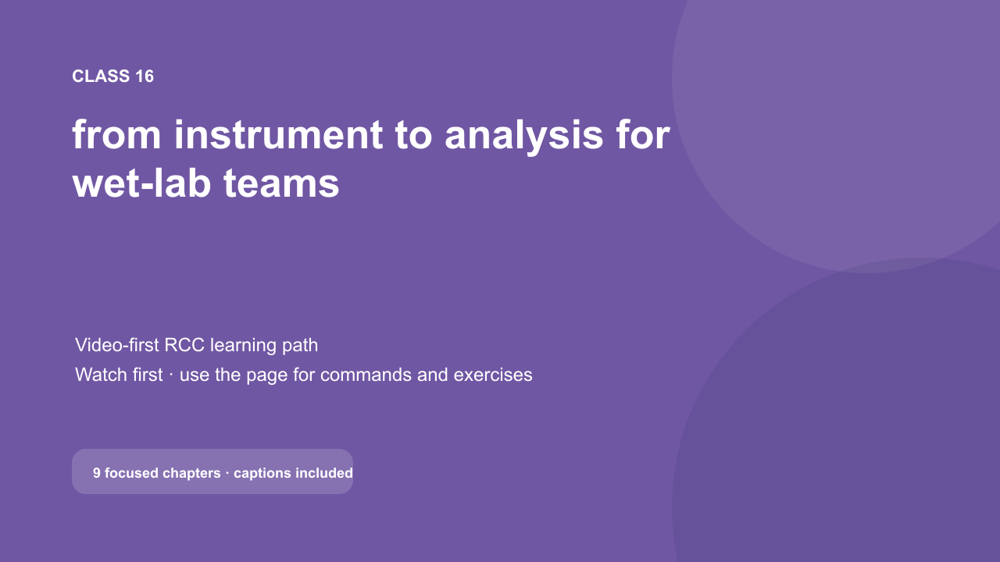
Class 16 · Wet lab5 min video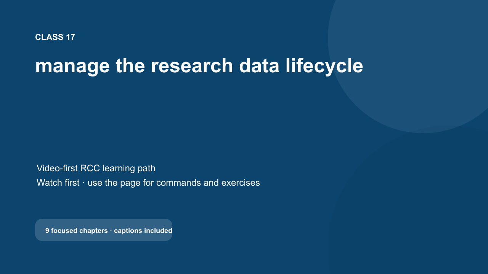
Class 17 · Data lifecycle6 min video| Class | Main outcome | Typical time | Gate |
|---|---|---|---|
| 1 | Connect safely using SSH and VS Code | 45-60 min | Local tools and one bounded SSH test |
| 2 | Organise a reproducible project and understand workflow dependencies | 45-60 min | Reviewed project layout and deterministic synthetic output |
| 3 | Choose CPU, RAM, GPU and I/O patterns | 45-60 min | Diagnose a synthetic bottleneck |
| 4 | Run a pinned Apptainer image | 45-60 min | Immutable image and clean environment |
| 5 | Submit three small Slurm acceptance jobs and choose an appropriate GPU request | 60-90 min | Byte-for-byte expected output and a justified GPU choice |
| 6 | Build and run a managed Snakemake workflow through Slurm | 75-100 min | Dry run, bounded IKIM-profile run, reuse, and provenance explanation |
| 7 | Prepare a bounded Nextflow/nf-core workflow for the planned RCC service | 75-100 min | Architecture and provenance gate now; synthetic -resume gate after release |
| 8 | Plan an appropriately scoped protected project website (vhosts not yet released) | 75-100 min | Local tests, scope decision and future vhost checklist |
| 9 | Use Python notebooks for large-data inspection, data science, and responsible AI exploration | 75-100 min | Loopback-only Jupyter job and example validation |
| 10 | Use R notebooks and batch scripts for statistical and larger tabular analysis | 75-100 min | R example job and reproducibility explanation |
| 11 | Develop Shiny apps safely and plan for a future vhost | 60-90 min | Tunnelled development session and future-vhost readiness decision |
| 12 | Convert notebooks into governed services or Slurm workflows | 60-90 min | Architecture statement and review checklist |
| 13 | Use biomedical data lawfully and safely in the RCC research enclave | 60-75 min | Scenario-based knowledge check and project-governance confirmation |
| 14 | Stage I/O-intensive work to job-local scratch and publish results safely | 60-90 min | Direct-versus-local synthetic comparison and justified storage choice |
| 15 | Trace RCC metadata, object-storage, network, and cache behavior | 45-60 min | Storage-path diagnosis and measurement plan |
| 16 | Move wet-lab instrument data into an approved RCC workflow | 60-90 min | Verified synthetic handoff plan with ownership and retention |
| 17 | Plan movement from project storage to Coscine (transfer not yet released) | 60-75 min | Synthetic instrument-to-Coscine lifecycle plan with verified acceptance criteria |
| 18 | Use an off-site coding agent without sharing real research data | 45-60 min | Invented task bundle, reviewed code, synthetic test, and bounded RCC run plan |
Course rules
- Never paste passwords, private keys, passkey exports, tokens, patient identifiers, or restricted sample sheets into exercises.
- Run computation through Slurm rather than on the login host.
- Use one small test at a time. Do not create job arrays, retry loops, connection loops, or host scans.
- Store durable project data under the approved project area and use node-local temporary storage for high-I/O intermediate work.
- Treat generated output as reproducible, not as a reason to bypass version control and provenance.
- Ask for project membership rather than sharing another person's account.
- Keep notebooks and web apps small enough that another person can review what they do.
- Use
cpu_shortfor jobs up to two hours, keep interactive work attended, and move long runners into bounded, restartable Slurm batch jobs on regular compute. - Keep direct identifiers and re-identification keys outside RCC; process genomic, imaging, and other biomedical research data only under the project governance that covers RCC.
Progress bookkeeping
Progress is stored locally on the learner's computer; no central tracking is required:
python3 tools/coursectl.py status
python3 tools/coursectl.py mark 1 ssh-ready
The progress file contains only class and gate names. It never records credentials, host keys, filenames, project names, or research data.